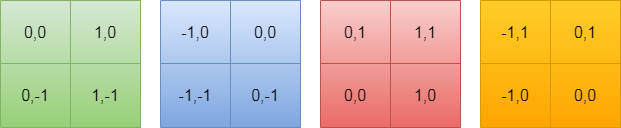
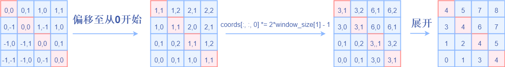
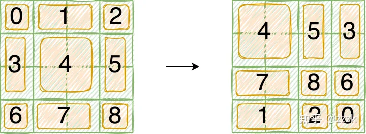
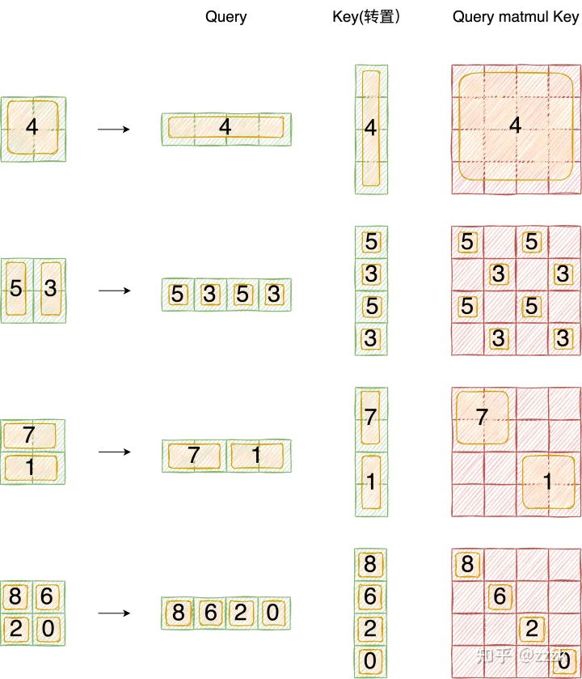

对Swin Transformer中的相对位置编码与attention mask的理解
一、前言
前一阵系统看了下swin transformer的论文和源码，反复咀嚼后对让我曾经头疼的两点内容谈一下自己的理解，其中包括window内部的用于self attention的相对位置编码和Shifted Window Attention中的attention mask。
本文不会介绍swin transformer的主要思路，主要聚焦于上面说的两个问题，没有看过原文的读者还请仔细读一下原文
二、Window Attention的相对位置编码
论文中提到Swin Transformer中的Attention采用relative postition的方式，不同于最初版本的VIT，relative position bias 会加到每一层的attention层。论文中有关相关位置编码的叙述如下
Relative position bias. In computing self-attention, we follow\(\text{ }^{[49,1,32,33]}\) by including a relative position bias \(B \in \mathbb{R}^{M^2 \times M^2}\) to each head in computing similarity:
where \(Q, K, V \in \mathbb{R}^{M^2 \times d}\) are the query, key and value matrices; \(d\) is the query/key dimension, and \(M^2\) is the number of patches in a window. Since the relative position along each axis lies in the range \([-M+1, M-1]\), we parameterize a smaller-sized bias matrix \(\hat{B} \in \mathbb{R}^{(2 M-1) \times(2 M-1)}\), and values in \(B\) are taken from \(\hat{B}\).
假设矩阵A是n*m,矩阵B是m*p,矩阵A和B相乘得到矩阵C是n*p，矩阵乘的时间复杂度为m*n*p
假设输入张量形状为[B, numWindows, window_size * window_size, C]，上文中说\(\text{M}^{2}\)表示一个窗口中元素的个数，Q/K的形状为[B*numWindows, num_heads, window_size*window_size, C//num_heads]，M即window_size， d=C//num_heads。在生成Q、K、V的时候，可以理解为B * numWindows * num_heads个形状为[window_size * window_size, C // num_heads]矩阵乘以[C // num_heads, C // num_heads * 3]的转换矩阵，这里转换矩阵是共享的。相比较与传统VIT的[B, C, H, W]->[B, num_heads, H*W, C // num_heads]（B*num_heads），SwinTransformer的共享矩阵个数多numWindows倍，矩阵乘法由[H*W, C // num_heads] @ [C // num_heads, C // num_heads * 3]变为[H // win_num * W // win_num, C //num_heads] @ [C // num_heads, C // num_heads * 3] ，这里定义win_num * win_num = numWindows。所以传统VIT矩阵乘法时间复杂度为B * num_heads * H * W * C // num_heads * C // num_heads * 3，即B * H * W * C // num_heads * C * 3。SwinTransformer的时间复杂度为B * numWindows * window_size * window_size * C * C // num_heads * 3。相比较而言在计算QKV矩阵的时候，Swin Transformer并没有节省计算量，节省计算量的部分发生在与V矩阵交互的过程中。
通过上述过程熟悉一下计算过程中的tensor的形状变化，方便我们更好的理解相对位置B，Q@K的形状应该是[B*numWindows, num_heads, window_size * window_size, window_size * window_size]，B的形状也可以是[1, num_heads, window_size * window_size, window_size * window_size]或者[1, 1, window_size * window_size, window_size * window_size]，文中采用的是前者，那么为什么不是后者呢？这个问题我一时半会也没想明白，两者的区别在于不同注意力头之间的相对位置编码是否可以共享，个人感觉从简单角度考虑是可以共享的。
下面说一下B是如何生成的，先考虑单头注意力，假设window中的H与W都是2，遍历窗口中每一个元素，求出遍历元素当做原点[0,0]时其余元素的坐标，可以分为以下4种情况：

B矩阵可以理解为一个一个的行向量，将上述窗口按照行展开成一维向量，B矩阵每一行的行坐标x表示以x元素为坐标原点，每一个行向量表示以x为坐标原点时的相对位置坐标。由于展开成一维以后需要从存储表中查找对应元素，所以需要调整只一维坐标且从0开始，故采用如下策略进行变换，为什么乘以(2*windows_size - 1)可以按照将一个N进制数转换为10进制数的算法来理解：

三、Shifted Window Attention中的attention mask
3.1 为什么需要attention mask
为了满足不同windows之间的信息交互
3.2 具体过程
- 先看左图roll之前的结果，针对如下特征进行按照做图进行窗口划分，虚线表示原来的窗口，为了表示roll之前和roll之后的变化，在左边预先设置划分好划分后的块数。实际上一开始仅有四块。

-
再看右图roll之后的结果，还是按照2x2的窗口大小进行划分，由于空间上连续的像素点之间的特征加上相对位置编码后计算self-attention才有意义，所以需要对
5，3，7,1，8,6,2,0加上attention mask，将注意力控制在每个子模块内部。 -
mask生成过程如下图所示

采用右边的向量乘以左边的向量，然后找到满足条件结果矩阵M中的元素值 等于其中一个x*x（x为向量中的所有元素）的值设置为true，其余设置为false，从而对Q@K矩阵加上一个mask，在计算softmax的时候不再考虑这个元素的贡献，至此attention mask讲解完毕。
创建日期: January 14, 2023